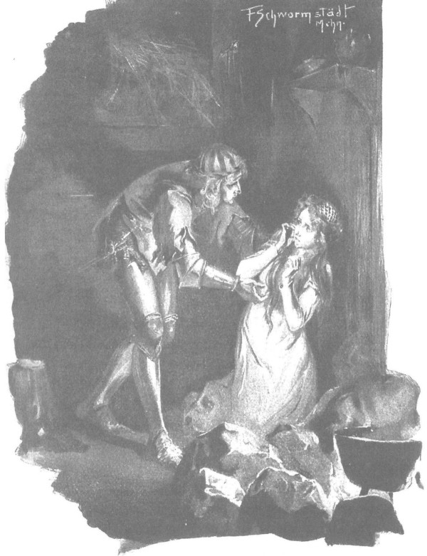

Đường đến bãi chiến trường, nơi Skirwoiłło tấn công bọn Đức, khá dễ đi, bởi đã quen. Họ đến nơi rất sớm, nhưng phải vội đi qua cho thật nhanh, bởi mùi tử khí không sao chịu nổi tỏa ra từ nhưng thi thể không được chôn cất. Đi ngang qua, họ cũng xua đi những đàn sói, những đàn quạ đen, quạ khoang và chim ăn xác chết đông đúc, rồi bắt đầu tìm kiếm dấu vết của con đường. Mặc dù trước đó cả đội quân đã kéo qua, nhưng ông Maćko từng trải dễ dàng tìm thấy trên mặt đất bị giày xéo các vết hằn sâu của những móng ngựa khổng lồ di chuyển theo hướng ngược lại, và bắt đầu giải thích cho những người trẻ tuổi ít tinh tường kỹ năng chinh chiến hơn:
- May là sau cuộc chiến không có mưa. Lưu ý rằng ngựa của Arnold phải chở một gã khổng lồ nên cũng phải rất to, và dễ đoán ra rằng khi phi thục mạng để trốn thoát, vó ngựa phải đạp mạnh hơn xuống đất so với lúc đi chậm rãi về hướng kia, do đó vết lõm dưới đất lớn hơn. Nhìn này, những chỗ ẩm vết móng ngựa thật rõ! Cầu Chúa cho chúng ta tóm cổ bọn chó chết, miễn là trước đó chúng không tìm được tường thành bảo vệ.
- Gã Sanderus bảo, - Zbyszko nói, - gần đây không có tòa thành nào, mà cũng đúng, bọn Thánh chiến mới chiếm được vùng này, chưa kịp xây thành. Chúng nó trốn nơi nào? Những người nông dân vốn sinh sống nơi đây thì hiện đang ở trong trại binh của ông Skirwoiłło, bởi vì cùng là dân tộc Żmudź… Còn làng mạc thì như Sanderus nói, bọn Đức đã thiêu trụi, bà già và trẻ con phải ẩn náu trong rừng sâu. Nếu không tiếc sức ngựa, ta sẽ đuổi kịp chúng.
- Ngựa cần phải dưỡng sức, vì ngay cả khi chúng ta thành công thì ngựa vẫn sẽ là sự cứu rỗi của chúng ta. - Ông Maćko bảo.
- Trong trận đánh, hiệp sĩ Amold bị trúng một chùy xích vào lưng. - Gã Sanderus xen vào. - Thoạt tiên ông ta không quan tâm đến chuyện đó chỉ lo đánh nhau và chém giết, nhưng sau đó người ta đã phải lột giáp phục cho ông ấy, bởi vì ban đầu không thấy gì, nhưng sau mới đau. Vì thế chắc chúng sẽ không chạy trốn quá nhanh đâu, mà có thể cần phải nghỉ lấy sức.
- Toán người mà ngươi nói, còn ai nữa không? - Ông Maćko hỏi.
- Có hai người phải chở theo cái kiệu nôi, được buộc vào giữa hai yên ngựa, ngoài ra là lão lãnh binh và hiệp sĩ Arnold. Còn khá đông những kẻ khác, nhưng đã bị những tráng binh Żmudź đuổi kịp giết chết.
- Thế thì, - Zbyszko nói, - gia binh của ta sẽ bắt hai tên chở cái kiệu nôi, chú sẽ tóm lão Zygfryd, còn cháu sẽ đánh Arnold.
- Nào! - Maćko nói. - Ta sẽ trị được lão Zygfryd, vì nhờ ân sủng của Chúa Giêsu mà sức trong xương cốt ta vẫn còn khỏe lắm! Nhưng anh đừng quá tự phụ, bởi Arnold là một gã khổng lồ đấy!
- Được! Để rồi xem! - Zbyszko nói.
- Ta không phủ nhận là anh tráng kiện, nhưng vẫn có những người mạnh hơn anh. Thế anh đã quên các vị hiệp sĩ ta đã gặp ở Kraków rồi sao? Liệu anh có địch nổi ông Powała xứ Taczew không? Rồi ông Paszko Đạo Chích xứ Biskupice và ngài Zawisza Đen nữa chứ! Sao? Đừng hăng máu quá, phải để ý xem chuyện gì xảy ra.
- Rotgier cũng đâu phải tay xoàng. - Zbyszko lầm bầm.
- Thế còn con thì có việc gì không ạ? - Chàng Séc hỏi.
Nhưng chàng không nhận được câu trả lời, vì lúc này đầu óc của ông Maćko đang vướng bận chuyện khác.
- Cầu Chúa ban phước, - ông nói, - miễn là sau này về được đến vùng rừng Mazowsze! Ở đó ta sẽ an toàn, khi đó mọi thứ đều kết thúc.
Nhưng sau một lúc, ông lại thở dài, hẳn ông chợt nghĩ là ngay cả khi đó không phải tất cả mọi chuyện đều kết thúc, bởi vì cần phải làm gì đó cho cô thanh nữ Jagienka bất hạnh.
- Hey! - Ông lẩm bẩm. - Phán xử của Chúa mới quả thật kỳ lạ. Đôi khi ta cứ nghĩ sao Chúa không để anh lấy nó, để ta được bình yên sống với hai đứa… Dẫu sao, đó là cách thường tình nhất. Mà trong giới quý tộc vương quốc này, chỉ có độc chú cháu ta phải lang thang qua các đất nước khác nhau trên những con đường gập ghềnh, thay vì được ngồi nhà làm chủ trang trại theo ý Chúa.
- Vâng! Quả thế, nhưng đó ý Chúa! - Zbyszko nói.
Họ đi trong im lặng một hồi lâu, rồi lão hiệp sĩ lại quay sang cháu lần nữa:
- Anh có tin cái gã lang thang kia không? Hắn là ai?
- Một kẻ nhát cáy và có thể là đứa lừa gạt nữa, nhưng đối với cháu vô cùng tử tế và cháu không sợ bị phản bội.
- Nếu vậy, cứ để cho hắn đi trước, bởi nếu hắn đuổi kịp bọn kia thì cũng không làm chúng sợ. Cứ nói với chúng rằng hắn đã trốn khỏi bị bắt, bọn chúng sẽ tin. Làm vậy tốt hơn, bởi vì nếu chúng trông thấy bọn ta, chúng sẽ kịp ẩn náu, hoặc chuẩn bị tự vệ.
- Ban đêm thì hắn không dám đi trước đâu, bởi hắn rất nhát, - Zbyszko nói, - nhưng ban ngày thì cách đó tốt đấy. Cháu sẽ bảo hắn ba lần một ngày dừng lại chờ đợi ta; nếu ta không thấy hắn ở chỗ dừng, thì đó sẽ là dấu hiệu rằng hắn đang đi với bọn chúng, và sau đó đi theo dấu hắn, ta sẽ tấn công chúng bất ngờ.
- Nhỡ hắn cảnh báo cho chúng?
- Không. Hắn mong điều tốt cho cháu hơn là cho chúng. Cháu sẽ nói với hắn là khi tấn công bọn chúng, ta cũng sẽ trói cả hắn nữa, để không phải sợ sau này chúng trả thù. Cứ để hắn không lộ ra là đi với ta…
- Thế anh nghĩ bọn kia còn sống sót à?
- Chứ sao khác được ạ? - Zbyszko hỏi lại vẻ buồn phiền. - Chú xem… Giá đây là vùng Mazowsze hoặc ở nơi gần quê hương, thì ta sẽ thách đấu chúng, như cháu đã thách đấu với Rotgier, và sẽ đấu một trận sống chết, nhưng đây là đất của chúng thì không thể… Đây là cuộc chạy đua để cứu Danusia. Cần phải thật nhanh và thật im lặng giải thoát cho nàng, tránh chuyện chẳng lành, rồi sau đó như chú nói, ta sẽ thúc ngựa để trở về vùng rừng đại ngàn Mazowsze. Tấn công bất ngờ có thể sẽ khiến chúng không kịp mặc áo giáp, thậm chí không kịp rút kiếm nữa! Khi đó ta sẽ giết chúng ư? Cháu sợ nhục lắm! Cả hai chú cháu ta đều đã được tấn phong hiệp sĩ, cả bọn chúng cũng…
- Phải. - Ông Maćko nói. - Nhưng biết đâu sẽ có đánh nhau.
Zbyszko chau mày, vẻ mặt vô cùng kiên quyết, là nết bẩm sinh của tất cả đàn ông trang Bogdaniec, và vào lúc này chàng giống hệt ông Maćko, đặc biệt là ánh mắt, như thể con trai ruột của ông.
- Cháu cũng muốn, - chàng nói giọng khô khốc, - được ném lão Zygfryd, đồ chó khát máu, xuống chân ông Jurand! Cầu Chúa ban cho!
- Xin Chúa ban cho, xin Chúa! - Ông Maćko lặp lại.
Trò chuyện như vậy, họ đã đi cả một thôi đường dài. Màn đêm buông xuống, một đêm trời trong, nhưng không trăng. Cần phải dừng lại để lũ ngựa nghỉ ngơi, mọi người ăn và ngủ để sức lực hồi phục. Nhưng trước khi đi nghỉ, Zbyszko dặn gã Sanderus rằng vào ngày hôm sau gã phải đi trước, gã vui vẻ tán thành, trong bụng thầm nhủ rằng trong trường hợp gặp nguy hiểm do thú dữ hoặc người dân địa phương thì gã có quyền chạy trở lại với họ. Gã cũng yêu cầu là không phải ba, mà bốn lần gã được phép dừng nghỉ, vì sự cô đơn luôn khiến gã sợ, ngay cả ở những vùng quê thanh bình, chứ huống hồ là trong rừng hoang đầy hiểm nguy nơi đây.
Sau khi đã ăn để lấy sức, họ tản đi nghỉ, ngả lưng trên những tấm da thú, bên một đống lửa nhỏ, được đốt dưới một thân cây đổ, cách xa đường chừng nửa dặm. Đám gia nhân thay nhau canh lũ ngựa đã được ăn no ngũ cốc khô, ngả mình gối cổ lên lưng nhau. Nhưng khi bình minh vừa ướp ánh bạc lên những ngọn cây, Zbyszko đã nhổm dậy đầu tiên, đánh thức những người khác, và lúc bình minh họ đã tiếp tục hành trình. Chẳng mấy khó khăn, họ lại tìm thấy dấu vó con chiến mã khổng lồ của Arnold hằn sâu trên mặt đất bùn đã khô vì hạn hán. Gã Sanderus đi trước và khuất khỏi tầm mắt họ, tuy nhiên đến nửa khoảng thời gian từ lúc mặt trời mọc đến giữa trưa, họ gặp gã ở chỗ nghỉ chân. Gã nói với họ là không thấy một sinh linh nào, ngoại trừ một con bò tót to khổng lồ, nhưng gã không phải lánh nó, vì con vật đã rời đi trước. Ngược lại, vào buổi trưa, khi dừng để dùng bữa ăn đầu tiên, gã nói đã gặp một người thợ nuôi ong, chân đang mang nài để leo cây, nhưng gã không giữ anh ta lại vì sợ rằng sâu trong rừng có thể có nhiều người hơn nữa. Gã đã cố gặng hỏi chuyện, nhưng họ không thể nói chuyện được với nhau.
Tiếp tục lên đường, Zbyszko bắt đầu thấy lo. Sẽ ra sao nếu họ đi lên vùng cao hơn và khô ráo hơn, nơi mặt đường cứng hẳn và khó có thể tìm thấy dấu vết? Ngoài ra, nếu cuộc truy đuổi kéo dài quá lâu, dẫn họ tới vùng đông dân hơn, nơi cư dân suốt một thời gian dài đã quen phải tuân theo bọn Thánh chiến, thì việc tấn công và cướp lại Danusia sẽ gần như không tưởng, bởi vì ngay cả khi lão lãnh binh Zygfryd và Arnold không ẩn náu sau một bức tường thành hay tiền đồn nào đó thì dân địa phương hẳn vẫn sẽ đứng về phía bọn chúng.
Nhưng may mắn thay, những lo ngại đó hóa ra là thừa, bởi vì tại điểm dừng chân tiếp theo vào thời điểm đã hẹn, họ không gặp gã Sanderus, thay vào đó phát hiện trên cây thông cạnh đường một vết hình chữ thập lớn, rõ ràng vừa mới khắc, vì còn tươi rói. Họ nhìn nhau, mặt nghiêm nghị hẳn, và trái tim bắt đầu đập dồn. Ông Maćko và Zbyszko ngay lập tức nhảy xuống ngựa, kiểm tra hết sức chăm chú các dấu vết trên mặt đất, nhưng chẳng phải tìm lâu, bởi vì chúng đập ngay vào mắt.
Gã Sanderus rõ ràng đã rời đường rẽ vào rừng, đi theo vết móng ngựa to tướng, không sâu như trên đường, nhưng vẫn khá rõ, vì ở đây là nền than bùn và con chiến mã nặng nề đã để lại trên từng bước chân vết của móc chống trượt gắn vào móng ngựa, thành những vết đen dọc theo mép hố vết móng.
Đôi mắt sắc sảo của Zbyszko còn thấy cả những dấu vết khác nữa, vì vậy chàng nhảy ngay lên ngựa, ông Maćko cũng làm theo, và họ bắt đầu bàn bạc với chàng trai Séc bằng giọng hạ thấp, như thể kẻ thù đã gần bên.
Chàng Séc khuyên lúc này nên đi bộ đuổi theo, nhưng họ không ưng cách đó bởi chẳng biết xuyên rừng còn bao xa. Nhưng đám gia nhân sẽ đi lên trước và khi phát hiện được điều gì thì sẽ ra hiệu để họ sẵn sàng.
Họ đi ngay vào rừng. Vết khắc thứ hai trên thân cây thông bảo đảm rằng họ không bị mất dấu gã Sanderus. Chẳng bao lâu họ nhận ra rằng họ đang đi trên một con đường rừng, hay chí ít cũng đang đi trên một lối mòn [220] giữa rừng rậm mà người ta thường đi theo để băng rừng. Họ tin rằng sẽ tìm thấy một bản làng giữa rừng, và ở đó có những người mà họ đang truy đuổi.
Mặt trời đã xuống thấp, chiếu ánh vàng rực qua những thân cây. Một hoàng hôn thanh bình. Rừng già yên tĩnh, chim muông đều đã tìm về chỗ trú. Thảng hoặc đây đó giữa lá cành được vầng dương chiếu sáng, hiện ra một chú sóc được ánh chiều nhuộm thành màu đỏ rực. Zbyszko, ông Maćko, chàng trai Séc và đám gia nô đi nối theo nhau thành một hàng dích dắc. Tin rằng các gia binh đi bộ đằng trước sẽ cảnh báo kịp thời, lão hiệp sĩ nói với cháu trai bằng giọng không quá thì thầm:
- Hãy tính theo mặt trời. - Ông nói. - Từ điểm dừng chân cuối cùng tới chỗ có vết khắc, ta đã đi một chặng đường dài. Theo đồng hồ thành Kraków, hẳn mất khoảng vài giờ… Nghĩa là gã Sanderus đã ở trong hàng ngũ bọn chúng khá lâu, đủ thời gian để kể cho chúng nghe chuyện phiêu lưu của mình. Cốt sao gã đừng phản bội.
- Gã không phản đâu. - Zbyszko nói.
- Miễn chúng tin gã, - ông Maćko kết thúc, - bởi nếu chúng không tin thì tình cảnh của gã sẽ rất tệ.
- Sao chúng không tin chứ. Chúng có biết gì về ta đâu? Mà chúng thì biết rõ gã. Nhiều khi tù binh vẫn trốn được mà.
- Đó chính là chuyện ta đang lo, vì nếu gã bảo đã trốn thoát khỏi trại tù thì chúng sẽ sợ có thể bị đuổi theo sau mà ngay lập tức di chuyển.
- Không. Gã nói dối thành thần. Mà chúng nó cũng biết chẳng ai thèm truy đuổi gã xa thế.
Đúng lúc đó họ chợt im bặt, một lát sau ông Maćko ngỡ Zbyszko thì thầm điều gì đó với ông, nên quay lại hỏi:
- Anh bảo gì?
Nhưng Zbyszko đang ngước mắt lên trời, chàng không thì thầm với ông, mà chỉ cầu Chúa che chở cho Danusia và mong muốn táo bạo của mình.
Ông Maćko cũng làm dấu thánh, nhưng ông vừa làm được một lần, thì một gia nhân đi đầu chợt nhô ra từ dám cây rừng, tiến vội lại gần ông.
- Trại nấu nhựa thông! - Y nói. - Bọn chúng ở đó!
- Dừng lại! - Zbyszko thì thầm, rồi nhảy phắt xuống ngựa.
Tiếp sau chàng là ông Maćko, chàng trai Séc và các gia nhân, trong đó ba người được lệnh ở lại canh lũ ngựa thật cẩn thận, cầu Chúa không để cho ngựa hí. Ông Maćko nói với năm người còn lại:
- Ở đó có hai thằng hộ vệ và gã Sanderus, các ngươi phải lập tức trói nghiến lại, nếu có ai có vũ khí mà muốn kháng cự, thì nện cho một cái vào thủ.
Họ vội vã tiến về phía trước. Dọc đường, Zbyszko còn thì thầm dặn chú:
- Chú lo lão già Zygfryd, còn cháu Arnold.
- Để ý nhé! - Ông nói.
Và ông nháy mắt ra hiệu cho chàng trai Séc để chàng ta hiểu rằng bất cứ lúc nào cũng phải sẵn sàng trợ giúp cậu chủ.
Chàng trai gật đầu ra dấu sẽ làm như thế, rồi vừa hít một hơi thật sâu trong lồng ngực, chàng vừa sờ để kiểm tra xem thanh kiếm có dễ rút khỏi bao không.
Nhưng Zbyszko để ý thấy và nói:
- Không! Ta lệnh cho ngươi ngay lập tức phải nhảy đến chỗ cái kiệu nôi và không được rời nó một tấc nào khi chiến đấu.
Họ đi nhanh và lặng lẽ, vẫn nương theo những bụi cây dẻ rậm rạp, nhưng đi chưa mấy xa, chừng hai chặng ngựa thì rừng rậm đột ngột gián đoạn, xuất hiện một trảng trống nhỏ, nơi thấy có một lò nhựa thông đã tắt lửa và hai túp lều đất, chắc là nơi các tay thợ lấy nhựa từng sinh sống trước khi bị chiến tranh xua đuổi. Hoàng hôn chiếu ánh sáng rực rỡ xuống đồng cỏ, lò nhựa và cả hai túp lều khá xa nhau. Trước một túp lều là hai hiệp sĩ đang ngồi trên khúc gỗ, còn trước túp lều kia là một gã tóc đỏ vai rộng và gã Sanderus.
Cả hai đều đang bận dùng vải lau những tấm áo giáp, dưới chân Sanderus là hai thanh kiếm mà hình như gã có ý định sẽ lau chùi sau đó.
- Nhìn kìa. - Maćko nói, bóp mạnh tay Zbyszko, cố kìm chàng lại thêm một lúc nữa. - Hắn cố tình tước gươm và giáp phục của bọn chúng. Tốt lắm! Lão đầu bạc thì hẳn là…
- Xông lên! - Zbyszko đột nhiên thét lên.
Nhanh như một cơn lốc, họ lao ra trảng trống. Bọn kia cũng bật ngay dậy, nhưng trước khi chúng tới được chỗ gã Sanderus, thì ông Maćko dữ tợn đã tóm lấy ngực lão già Zygfryd, ép lão gập người ra sau lưng và ngay lập tức dè lên người lão. Zbyszko và Arnold ghì chặt nhau như hai con chim cắt, tay bám chặt vào nhau và bắt đầu đẩy nhau kịch liệt. Gã người Đức vai rộng ngồi bên Sanderus trước đó bật dậy túm lấy gươm, nhưng trước khi kịp vung lên thì đã bị Wit, gia nhân của ông Maćko, nện cho một cán rìu vào cái đầu tóc hung đỏ quạch, gục ngay tại chỗ. Sau đó theo lệnh ông chủ, họ trói nghiến lão Sanderus, còn gã, mặc dù biết rằng điều này đã hẹn trước, vẫn hét lên vì sợ hãi, hệt như con bê bị người ta cứa đứt họng.
Zbyszko, mặc dù khỏe đến mức có thể bóp cành cây tươi tứa nước, nhưng vẫn cảm thấy như thể bị rơi vào vuốt gấu chứ không phải tay người. Thậm chí chàng ngỡ như nếu không có bộ áo giáp mặc trên người, nếu chàng không kịp đấu bằng vũ khí, thì hẳn gã khổng lồ Đức đã nghiền nát xương sườn của chàng, hay bẻ gãy cả cột sống. Mặc dù chàng đã nhấc hắn lên một chút, nhưng hắn lại nhấc chàng lên cao hơn và cố dồn sức quật chàng xuống đất, để chàng không thể đứng dậy được nữa.
Nhưng Zbyszko cũng cố hết sức ép mạnh đến nỗi mắt của hiệp sĩ Đức bật máu, rồi chàng luồn một chân vào giữa hai đầu gối hắn, co chân thúc mạnh và quật hắn ngã xuống đất.
Thực ra cả hai cùng ngã, chàng trai trẻ nằm phía dưới, nhưng đúng vào lúc này, ông Maćko vẫn chú ý theo dõi mọi thứ, bèn đẩy lão Zygfryd đã nửa sống nửa chết vào tay mấy gia nhân, rồi nhảy về phía hai người đang nằm lăn trên đất và nhanh như cắt trói hai chân Arnold bằng đai da, rồi cưỡi lên người hắn như lên con lợn rừng vừa bị hạ, gí mũi đoản kiếm vào cổ hắn.
Tên Đức hết lên một tiếng khủng khiếp, bất lực buông tay khỏi thân mình Zbyszko, và sau đó hắn bắt đầu rên, không phải vì lưỡi đoản kiếm, mà vì đột nhiên cảm thấy đau khôn tả ở lưng, nơi hắn đã từng bị trúng một chùy trong cuộc chiến với ông Skirwoiłło.
Ông Maćko dùng cả hai tay túm lấy cổ áo hắn kéo rời khỏi người Zbyszko, còn Zbyszko nhổm lên khỏi mặt đất rồi lại ngã xuống, sau đó chàng muốn đứng dậy nhưng không thể, nên dành ngồi bất động hồi lâu. Mặt chàng tái xanh và đầm đìa mồ hôi, mắt vằn gân máu và đôi môi tái mét, mắt nhìn thẫn thờ về phía trước như thể chưa hoàn toàn tỉnh táo.
- Anh sao thế? - Ông Maćko lo lắng hỏi.
- Không có gì, có điều cháu mệt quá. Giúp cháu đứng dậy với. Ông Maćko luồn tay xốc nách, nâng chàng đứng lên.
- Anh đứng được không?
- Được ạ.
- Anh có đau gì không?
- Không. Cháu chỉ thở không ra hơi.
Lúc đó, chàng trai Séc hẳn thấy mọi chuyện đã xong xuôi, mới xuất hiện trước túp lều đất, túm lấy cổ mụ đầy tớ của Giáo đoàn. Thấy thế, Zbyszko lập tức quên hết mệt nhọc, sức mạnh quay trở lại với chàng ngay lập tức, và như thể chưa bao giờ vật lộn với gã Arnold kinh khủng, chàng nhảy vội về phía túp lều đất.
- Danusia! Danusia!
Nhưng không có ai trả lời những tiếng gọi đó.
- Danusia! Danusia! - Zbyszko lại gọi.
Và chàng nín lặng. Căn phòng mờ tối, vì vậy thoạt tiên chàng không thể nhìn thấy gì. Chỉ có sau những phiến đá xếp làm bếp vọng đến tai chàng một tiếng thở hổn hển như có con thú nào đang ẩn nấp.
- Danusia! Chúa tôi! Anh đây mà! Zbyszko!
Rồi đột nhiên chàng thấy trong bóng tối đôi mắt của nàng mở to, đầy kinh hoàng, không tỉnh táo. Chàng bèn nhảy vội về phía nàng và ôm nàng trong vòng tay, nhưng nàng hoàn toàn không nhận ra chàng, vừa cố thoát ra khỏi tay chàng, vừa hổn hển lặp đi lặp lại:
- Sợ quá! Sợ quá! Sợ quá!…

Rồi đột nhiên chàng thấy trong bóng tối, đôi mắt của nàng mở to, đầy kinh hoàng, không tỉnh táo